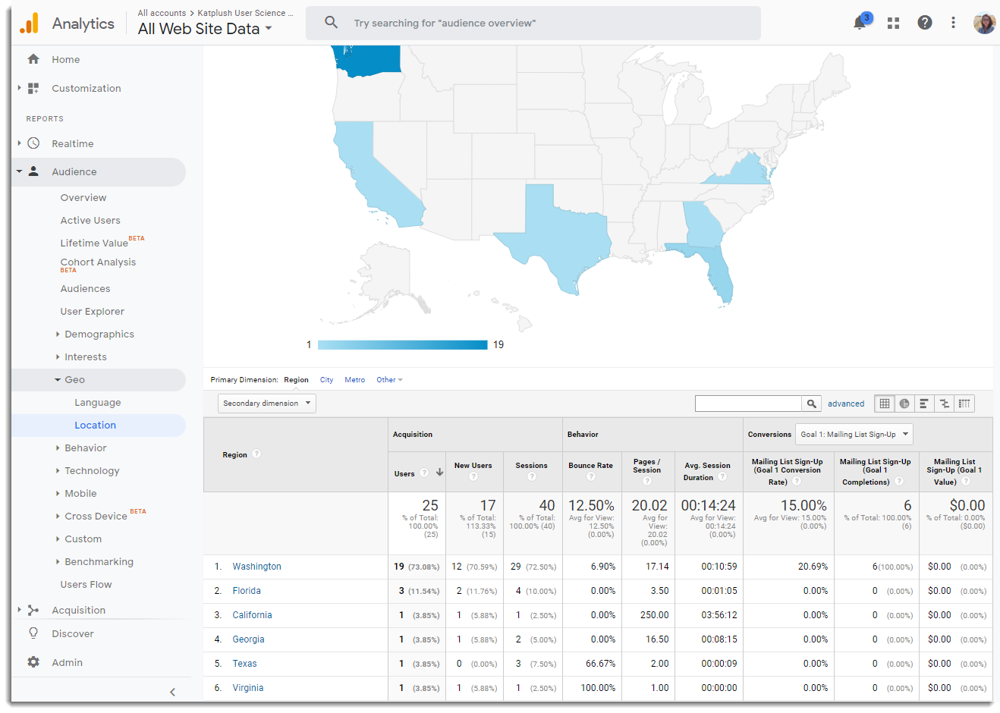

Exploring how Google Analytics can help optimize my web page has been a fairly mind blowing experience. The data provided by Google Analytics on my blog, even in it's infancy, was incredibly eye opening. It's incredible how much one can track and tweak and track to really optimize a web page, and the fact that Google Analytics and Google Optimize have such rich free versions is really quite incredible. Aside from the dashboard of reports on behavior, geography, active user trends, traffic channels, devices used, session duration and page views, the ability to set goals and events and see real time reporting on them is one of the coolest features.
Google's Optimize visual editor for A/B testing is an incredibly useful feature that allows for on the spot previews of changes and even customization of user groups that each variant is tested on.
My goals of getting reporting for Mailing List Sign-Ups and PDF downloads, both took a little time to set up but once the reporting started to come in, it was fascinating to see all the various ways to view the traffic and the flow of events. On the back end of setting up the goals, and doing A/B testing the usability tests conducted again were instrumental in pointing out to me as the developer where my UI was missing certain characteristics that, for instance made the Download link look like an clickable link.
I still have a lot of work to do to fix some of the formatting/CSS on my site, since there is an issue with the titles cutting off depending on the device size. I'd also like to tweak my goals a bit more and actually add some JavaScript and database for my Mailing List Sign Up form. Once some these things fixed I'd like to start experimenting with a very small amount of advertising. As much as I dislike ads, it's primarily due to how they are laid out on the page and how interruptive they tend to be. I also am very anti-remarking or retargeting type of advertising. I started reading a little more about it when setting up my goals, but at this time my general stance is against that type of advertising due to my own and the general sentiment of it creating privacy issues.
This deep dive into Google Analytics and all the different data it provides on users was also an eye opener in terms of privacy and ethics concerns. It's clear that developers and business owners have a fairly large amount of data on the visitors to their site that they can work with. They also have the options to create select versions of their sites for select groups. All of this is great and can really benefit a business by catering to specifics of certain groups but it's important to look a the big picture and keep ethics top of mind.
As stated earlier I still have a lot of work and research to do on my blog and the features provided by Google Analytics for tracking goals and traffic as well as advertising. I've also haven't even skimmed the surface of SEO optimization with links, tags and indexing. Google Analytics is a perfect tool for this as well but all this will require additional time and experimentation.